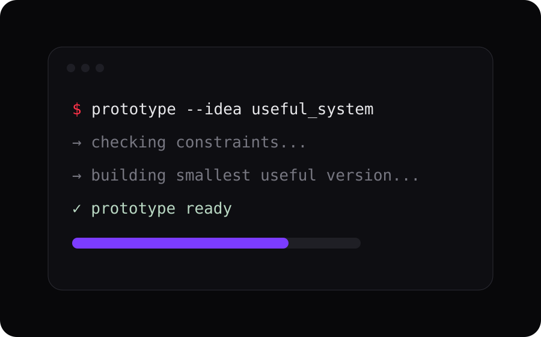

Workflow Automation
Connect forms, spreadsheets, email, APIs and business tools so routine actions happen with less manual effort.
APIsAutomation
Malaysia · Automation & digital systems
Akizen helps small businesses simplify messy workflows, automate repetitive tasks and build focused digital tools that save time without adding unnecessary complexity.
Start with the problem
If your team is copying data between tools, chasing updates manually, maintaining spreadsheets that keep breaking, or working around an outdated process, that is where Akizen starts.
Connect tools, trigger actions and reduce manual steps.
Explore services → 02Replace fragile workarounds with focused systems people can actually use.
See solutions → 03Start small, prove the value, then improve from real usage.
Request an audit →Services
Akizen is best suited to small businesses and lean teams that need a practical outcome—not a large transformation project or an oversized software stack.
Connect forms, spreadsheets, email, APIs and business tools so routine actions happen with less manual effort.
Build lightweight portals, dashboards and workflow systems around the way your team actually works.
Create focused websites, landing pages and WordPress systems that support a real business process or sales goal.
Good first projects
A good Akizen project usually starts with one recurring pain: duplicate data entry, manual reporting, repetitive follow-up, poor stock visibility, or a website that is not converting attention into action.
The goal is to improve one process clearly before expanding the scope.
Solution directions
These are the kinds of focused systems Akizen can shape around a business workflow. The solution should fit the problem—not the other way around.
Give a team one place to see stock, purchase history, operational status and reporting instead of stitching the picture together manually.

Turn repetitive inputs into useful actions, notifications and records across the tools a business already uses.

Test a workflow or service idea quickly before committing to a large custom build.

About Akizen
Akizen is a small, focused digital practice built around clarity, useful automation and maintainable solutions.
The approach
Many digital problems are not caused by a lack of tools. They come from unclear processes, duplicated work and systems that were added without removing anything.
Akizen starts with the bottleneck, removes unnecessary complexity, builds the smallest useful solution and improves it from evidence.
Understand the process and desired result before choosing technology.
Design matters, but reliability, usability and maintainability matter more.
Ship a focused solution, observe what changes and improve from real feedback.
Free workflow audit
Describe one process that feels slow, manual, fragile or unnecessarily complicated. The first goal is to identify whether it is worth automating or rebuilding at all.